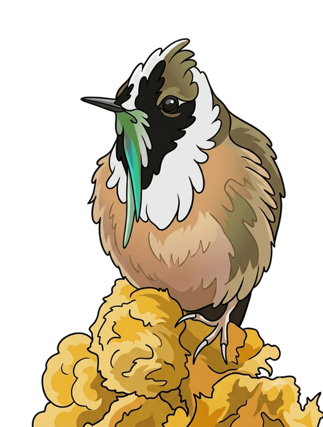
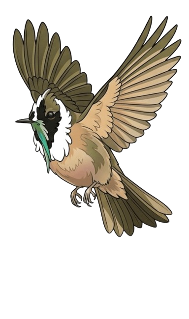

Juanfe Martínez

Miles de usuarios, suscripciones mensuales, y un problema que tarde o temprano enfrenta cualquier equipo de datos.
Sacas cien mil filas de la base de datos, las exportas a un CSV, abres un notebook, lo llamas churn_prediction.ipynb, y empiezas.
Etapa 1 · data → preprocessing → model → evaluation
# librerías
import pandas as pd
from sklearn.model_selection import train_test_split# cargar datos
df = pd.read_csv("streamly_churn.csv")# limpieza
df = df.dropna(subset=["monthly_price", "days_since_last_login"])# feature engineering
df["engagement_score"] = df["sessions_last_30d"] * df["completion_rate"]X_train, X_test, y_train, y_test = train_test_split(
X, y, test_size=0.2, random_state=42
)modelo = LogisticRegression(max_iter=1000)
modelo.fit(X_train, y_train)roc_auc_score(y_test, modelo.predict_proba(X_test)[:, 1])
0.876
Todo funciona. 15 celdas, cada una hace una cosa — esto no tiene nada de malo.
Una semana después: "¿probamos con Random Forest?" Ese es el momento exacto en que el notebook deja de alcanzar.
Etapa 2 · Logistic Regression, Random Forest, XGBoost, LightGBM
modelo_1 = LogisticRegression(
max_iter=1000
)
modelo_1.fit(X_train, y_train)
roc_auc_score(
y_test,
modelo_1.predict_proba(X_test)[:, 1]
)0.831
modelo_2 = RandomForestClassifier(
n_estimators=300
)
modelo_2.fit(X_train, y_train)
roc_auc_score(
y_test,
modelo_2.predict_proba(X_test)[:, 1]
)0.876
modelo_3 = XGBClassifier()
modelo_3.fit(X_train, y_train)
roc_auc_score(
y_test,
modelo_3.predict_proba(X_test)[:, 1]
)0.904
Etapa 2 · Experimentación
Ya se repitió tres veces el mismo .fit() y el mismo cálculo de métrica.
Etapa 3 · Feature engineering
Una variable nueva, que no venía en el dataset original — y ahí un notebook tradicional empieza a salirse de control.
Otra vez — por una variable nueva
# librerías
import pandas as pd
from sklearn.model_selection import train_test_split# cargar datos
df = pd.read_csv("streamly_churn.csv")# limpieza
df = df.dropna(subset=["monthly_price", "days_since_last_login"])# feature engineering
df["engagement_score"] = df["sessions_last_30d"] * df["completion_rate"]X_train, X_test, y_train, y_test = train_test_split(
X, y, test_size=0.2, random_state=42
)modelo.fit(X_train, y_train)
roc_auc_score(y_test, modelo.predict_proba(X_test)[:, 1])
0.876
Etapa 3 · Feature engineering
engagement_score = sessions_last_30d × completion_ratepayment_risk — función de failed_payments y payment_methodcustomer_activity — combinación de devices_used y unique_content_last_30dsupport_intensity = support_tickets + complaintsCada vez que se agrega una feature nueva, hay que volver a correr las 15 celdas para los 4 modelos.
Otra vez — por un nuevo cálculo de variables
# librerías
import pandas as pd
from sklearn.model_selection import train_test_split# cargar datos
df = pd.read_csv("streamly_churn.csv")# limpieza
df = df.dropna(subset=["monthly_price", "days_since_last_login"])# feature engineering
df["engagement_score"] = df["sessions_last_30d"] * df["completion_rate"]X_train, X_test, y_train, y_test = train_test_split(
X, y, test_size=0.2, random_state=42
)modelo.fit(X_train, y_train)
roc_auc_score(y_test, modelo.predict_proba(X_test)[:, 1])
0.876
Etapa 3 · El caos
💀 Nadie recuerda cuál de los cuatro tiene el engagement_score corregido.
Etapa 3 · Nace src/
El notebook deja de ser el lugar donde vive el código. Pasa a ser el lugar donde se usa el código.
Etapa 4 · Experimentación
engagement_score y sin élmax_depth=4 vs max_depth=8payment_riskEtapa 4 · Experimentación
Ya no estamos entrenando un modelo. Estamos gestionando experimentos.
Otra vez — por un nuevo experimento
# librerías
import pandas as pd
from sklearn.model_selection import train_test_split# cargar datos
df = pd.read_csv("streamly_churn.csv")# limpieza
df = df.dropna(subset=["monthly_price", "days_since_last_login"])# feature engineering
df["engagement_score"] = df["sessions_last_30d"] * df["completion_rate"]X_train, X_test, y_train, y_test = train_test_split(
X, y, test_size=0.2, random_state=42
)modelo.fit(X_train, y_train)
roc_auc_score(y_test, modelo.predict_proba(X_test)[:, 1])
0.876
Etapa 5 · Reproducibilidad — en el standup...
streamly_churn.csv se usórandom_stateEtapa 5 · Reproducibilidad
Es dejar de depender de la memoria: cada experimento queda registrado, con su configuración, su seed y un identificador único — no solo ejecutado.
Etapa 6 · El proyecto
Etapa 6 · El proyecto
Son las decisiones que nos llevaron a necesitar XGBoost, MLflow y Docker — y ninguna se tomó de un tirón.
Cierre
No hiciste nada mal. Es la señal de que tu proyecto ya superó lo que un solo notebook puede sostener.
Nadie "se gana el derecho" a tener src/. Se gana la primera vez que alguien pregunta "¿dónde va el código compartido?" y no hay una buena respuesta.
Gracias por acompañar la charla
Es la primera señal de que tu proyecto está listo para evolucionar.
